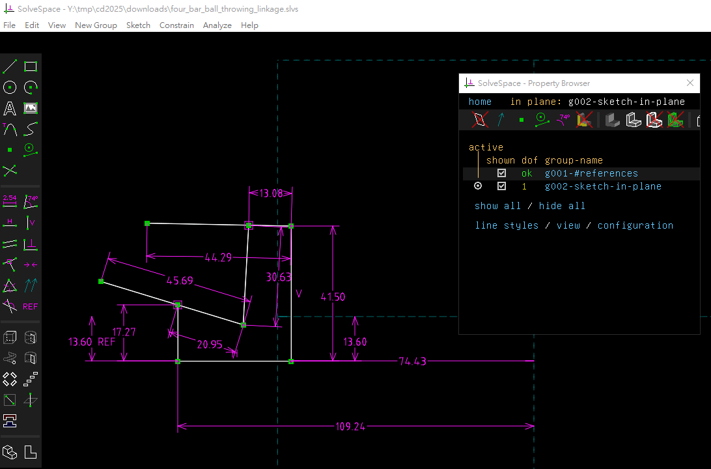

Replit <<
Previous Next >> Topics
Projects
每六人一組
協同專案:
- CoppeliaSim 虛實整合彈珠檯系統 (Flipper, Bumper, Kicker, Score Board)
- Webots 虛實整合彈珠檯系統 (Flipper, Bumper, Kicker, Score Board)
- CoppeliaSim 虛實整合六方投籃機系統
- Webots 虛實整合六方投籃機系統
期中專案報告 - 彈珠檯虛實整合系統
探討如何結合 Web 機電模擬場景 (CoppeliaSim 與 Webots) 以及 Arduino based 控制系統, 建置一個虛實整合彈珠檯系統
期末專案報告 - 六方投籃機虛實整合系統
探討如何結合 Web 機電模擬場景 (CoppeliaSim 與 Webots) 以及 Arduino based 控制系統, 建置一個虛實整合六方投籃機系統
可攜系統:
下載 python_2025_lite.7z (428 MB, 解開壓縮後約 1.5 GB)
下載 NX2312 可攜 CAD 壓縮檔案 (1.85 GB, 解開後約 9 GB)
nx2312_Drafting.7z
nx2312_nxplot.7z
Webots_2025a.7z (1.5 GB, 解開後約為 2.9GB)
Blender4.2.7z
vscode.7z
pinball.7z (搖桿出口的感測器範圍過短, 若球離開球檯時未觸動感測器則無法重置至發球位置)
彈珠檯場景的後續延伸應用:
根據球與搖桿的位置, 了解能夠得最高分的左右搖桿作動時機
利用球檯上方的 image sensor (等同是實體球檯上方的攝影機) 辨識球的位置, 然後根據上列能夠取得最高分的出手時機驅動搖桿.
學習使用運用 Webots 建立場景
https://www.cyberbotics.com/doc/guide/index
https://robotics.stackexchange.com/questions/24227/how-to-import-a-3d-model-in-webots-r2022b
vrmlman.pdf
如何與 CAD 整合
如何控制並建立 Pinball Machine 機電模擬系統
如何與 https://lcgamboa.github.io/ (PICSimLab) 結合應用
建立虛實整合彈珠檯系統
虛實整合六方投籃機系統
六個長方形球檯圍成一個圓圈, 各參與者前方各有一個可供投籃得分的籃框, 各籃框可繞順時鐘或逆時鐘不定時旋轉, 每個長方形球檯距離籃框一定距離處, 各設有一個投籃機構, 每一位操作者可以控制該機構投擲籃球的角度與起始速度將籃球投出.
當遊戲開始計時 10 分鐘, 籃框開始轉動, 每位操作者投出球之後, 系統將自動在投籃處產生另一顆球, 當所投出的球其落點低於籃框高度後, 無論得分與否, 各參與者所投出的球將自動消失.
各參與者一旦進入投籃場景, 其長方形球檯與綜合計分板將自動面對投射者. 計時結束後將取前三名領先者繼續下一輪排名競賽.
Tasks:
投籃機構設計
籃框旋轉機構設計
球檯與記分板面對操作者設計
機電虛實整合系統設計
第一階段計時結束後, 如何進入前三名排名賽
參考資料:
fourbar_ball_throwing_linkage.slvs
sixbar_ball_throwing_linkage.slvs

Replit <<
Previous Next >> Topics